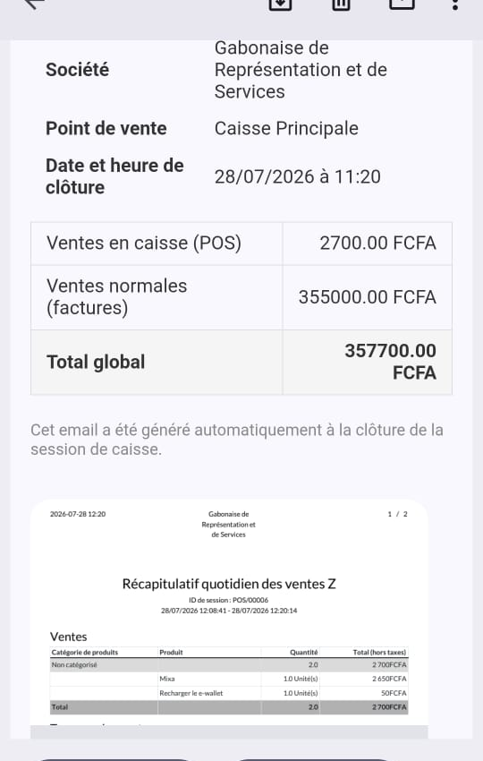
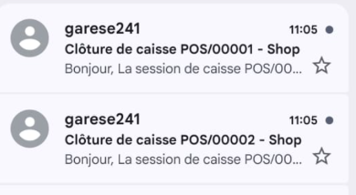

Recevez automatiquement un email récapitulatif à chaque clôture de session de caisse (Point de Vente), avec le détail des ventes POS, des ventes normales, et le rapport PDF "Ventes du jour" en pièce jointe.
Un email reçu automatiquement à chaque clôture, avec le détail des ventes et le rapport PDF en pièce jointe :

Un email distinct est envoyé pour chaque session de caisse clôturée :

Idéal pour les commerces et restaurants qui veulent un suivi quotidien fiable de leurs ventes, sans avoir à se connecter à Odoo pour consulter les chiffres après chaque clôture de caisse.
Une fois installé, rendez-vous dans le menu Rapport de clôture caisse > Paramètres pour choisir l'utilisateur destinataire. Aucune autre configuration n'est nécessaire.